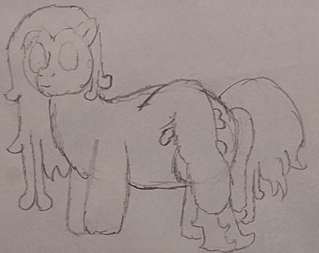

| Commonality | 18.9% (Gangrenous Archons) |
| Durability | 6/10 |
| Strength | Physical: 6/10 Psionic: 0/10 Magical: 0/10 |
| Specials | Elasticized natural flail |
| Personality | Part time bouncers |
Macerators are a gangrenous variation of Manipulators, spawned in place of them by a Gangrenous Archon. Equipped with an elasticizable arm crowned with a large mace, they act as light hoofsoldiers with a greater emphasis on frontline capability, at the cost of versatility. A group of Macerators is known as a grinder.
Manipulators - Macerators - Laborers
Macerators are a fair bit larger than Manipulators, standing at a significant 3' 9" (114cm) tall with a bulkier build to accommodate their greater physical durability and strength. Compared to many other gangrenous puppets, Macerators have relatively intact body features and only display gangrene in their long hair and as part of their colouration. Where Macerators most drastically differ from Manipulators is in their arms: Rather than having fixed double-elbowed arms with hands on the end, Macerators have more elasticized, flexible limbs capable of disjointing into stretchable, gangrenous flails. Their arm is considerably durable, and can relatively easily be regrown by a Demulcent if it somehow severed.
Macerators, in combat, play a similar role to bulwark-specialized Manipulators. Their larger size, enhanced durability, and more potent natural weaponry makes them especially suited to frontline engagements, and they prefer to shore up a lack of bulwarks when possible. Their gangrenous limbs star in this role, in one of two modes: Jointed or disjointed. When jointed, the Macerator has greater control over the weapon, and can use their hard bone mass as a tool for parrying or follow-up attacks. When disjointed, however, the Macerator's arm is capable of stretching up to twice as far (even so far as three times if properly softened by a Demulcent prior to the engagement), and the weapon benefits from greater potential energy. Particularly when using their limb in its disjointed configuration, a Macerator's combat movements are often similar in nature to a Consul's when the latter has only a small number of Agents.
Macerators' biggest tradeoff for their superior natural weaponry and physical prowess is, by far, versatility. Losing the ability to use tools is a substantial detriment to their range of applications, but there is also an internal change that reflects their relative lack of neural plasticity: While receptive and often cooperative in the schemes of other Manipulators, Macerators seem to lack the ability to properly formulate plans in and of themselves, and display an utter lack of psionic coordination that non-gangrenous Manipulators are expected to have.
While less useful than Manipulators during peacetime due to their relative lack of variety, Macerators take on lives as bouncers and spare muscles, often supplementing the absence of a Praetor in Manipulator work crews, particularly when such crews are operating away from the greater clan. They are also capable of taking part in Manipulators' or other puppets' plans, with their flexible limbs serving as useful temporary bindings, cables, or (most regularly) hammers.
Being heavily modified Manipulators, Macerators of course share a great deal of triggers with their purified siblings. In fact, the differences in the epigenetic triggers, aside from the presence of gangrene itself, is next to none, explaining how Macerators retain so much similarity to their more common forms. Macerators do, however, sport greater internal complexity, with their gangrenous components often performing redundant functions that lead to a remarkable degree of survivability.
The Gangrene was such a curious thing... I worried about it at first, given how it seemed to hurt my childrens' magic. The more I understand it, however, the more I realize that it is a tradeoff, rather than a negative. Many of the little ones are tougher than their fellows, and also have vastly different abilities. It helps to think of them not as simple variations, but as wholes of their own. I can see that mindset propagating into the other puppets; where they were once skeptical of their altered forms, now all of them mingle, taking advantage of each others' abilities.
Macerators were a bit of a cheeky addition to the Gangrenous puppet loadout, but it was a fun opportunity to finally make a puppet type reflecting the last missing trait from Hyacinth themselves: Their mace. The mace was a holdover from their original design, which was heavily based on Cataclismo's enemies, including a "Centaur" unit that had 5 equine legs and large maces for breaking walls. Macerators, as such, fill the roll of an unspoken "fourth core puppet" that closes out a chapter in Hyacinth's developmental history.
